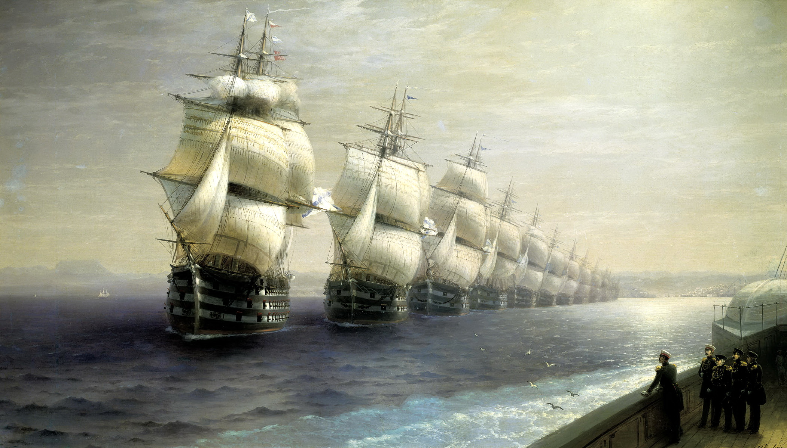

Смотр черноморского флота - Иван Айвазовский
Описание картины "Смотр черноморского флота - Иван Айвазовский":
XIX век – время блистательных побед Российского флота. Принимавший участие в нескольких морских операциях, побывавший в Севастополе во время Крымской войны, Иван Константинович Айвазовский восхищался героизмом и отвагой русских моряков и гордился опытом и талантом наших знаменитых флотоводцев, со многими из которых был знаком лично. В 1849 году он принимает участие в смотре кораблей Черноморского флота, проводимом императором Николаем I. Это великолепное зрелище настолько врезалось в память художника, что в 1886 году он напишет картину, посвященную этому событию, наполненную торжеством и чувством гордости. Солнце стоит высоко в небе, яркими слепящими бликами отражаясь воде, переливается серебром дорожка, бегущая по небольшим волнам. Легкие вытянутые облака плывут по бледно-голубому небу. Вдали, в мягкой золотисто-седой дымке, видна панорама Севастопольской бухты, на холмах раскинулся белый город. На горизонте тают нежные синевато-синие очертания гор. На палубе пароходофрегата «Владимир» стоит император Николай I, принимающий парад, внимательно вглядывающийся в приближающуюся эскадру. Недалеко от него рядом с адмиралом М. П. Лазаревым стоят П. С. Нахимов, В. И. Истомин и В. А. Корнилов. Сосредоточены их лица, руки сжаты в кулаки, глаза, не отрываясь, пристально следят за движением кораблей. А перед ними, в величественном кильватерном строе, расправив паруса, стремительно и легко идет гордость и слава России – Черноморский флот, один из сильнейших на южных морях. С тихим шипением режут небольшую волну форштевни, оставляя за собой пенный след. Смотрят в небо высокие мачты, несущие на себя наполненные ветром полотнища, ярко-белые на солнце или голубовато-пепельные в тени. Гордо развеваются на ветру бело-синие Андреевские флаги. На пушечных палубах открыты красные порты, видны готовые к бою пушки. Солнечный свет подчеркивает белизну полос на бортах, под устремленными вперед бушпритами на носах судов отчетливо видны расправившие крылья двуглавые орлы. Задавая темп, возглавляет колонну «Двенадцать апостолов» - линейный корабль, несущий на себе 130 пушек. За ним идут не менее знаменитые парусники, принимавшие участие в Крымской войне. Команды выстроены вдоль борта. Идеальная выучка – ни один корабль не выбивается из строя, ни один парус не потерял ветра. Быстрокрылые чайки, спутники моряков, кружатся над волнами. Чтобы подчеркнуть значимость момента, художник выбирает сдержанные краски: серые стальные, синие, холодные голубые и спокойные оливково-коричневые. Картина наполнена светом и воздухом. Она так реальна, что мы чувствуем свежий морской бриз, слышим крики чаек и плеск рассекаемых волн, ощущаем громаду и великолепие парусов над морем. Пенится за бортом морская вода, меняющая свой цвет от серебристо-стального под солнечным светом, до темного свинцово-сизого в тени.
Больше информации о картине...